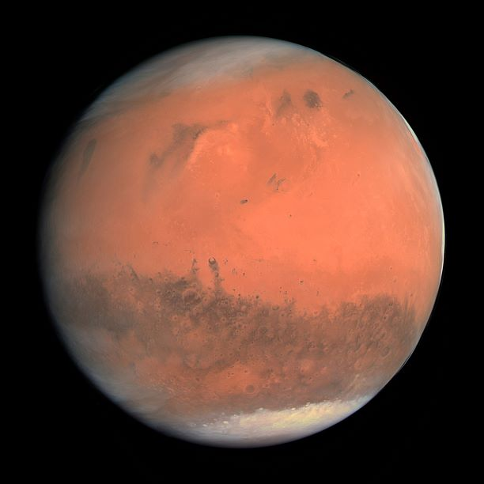

Merkür

Merkür, Güneş Sistemi'ndeki gezegenler arasında en küçüğüdür ve Güneş'e olan yakınlığı nedeniyle yörüngesini sadece 88 dünya gününde tamamlar. Bu hızlı dönüş, Merkür'ün yüzey sıcaklıklarında büyük farklılıklara yol açar; gündüzleri çok sıcak olabilirken, geceleyin aşırı soğuk olabilir. Yüzeyi, kraterlerle dolu ve çatlamış kayalık bir görünüme sahiptir. Atmosferi oldukça seyrek ve büyük ölçüde Güneş'in radyasyonundan etkilenir. Bu nedenle, Merkür'de atmosferik etkiler veya iklim değişimleri gibi fenomenler gözlenmez. NASA'nın MESSENGER misyonu, bu küçük gezegenin gizemlerini ve özelliklerini daha iyi anlamak için kapsamlı bir araştırma yapmıştır.
- Çap: 4,880 km
- Güneş'e uzaklık: 57.9 milyon km
- Gün uzunluğu: 58.6 Dünya günü
- Yıl uzunluğu: 88 Dünya günü
Venüs
Venus, Güneş Sistemi'ndeki ikinci gezegendir ve Dünya'ya oldukça benzer bir boyuta sahiptir. Adını Roma mitolojisindeki aşk ve güzellik tanrıçasından alır. Yoğun bir atmosfere sahiptir, bu atmosferin büyük kısmı karbondioksit ile doludur ve aşırı yüksek sıcaklıklarda sıcaklık tutar. Bunun sonucunda, Venüs, Güneş Sistemi'ndeki en sıcak gezegen olarak bilinir. Yüzeyi, volkanik aktivite izleri ve geniş lav düzlükleriyle kaplıdır. Ayrıca, yoğun bulut tabakası Venüs'ün yüzeyini gözlemlemeyi zorlaştırır ve bu nedenle, uzun süre boyunca gezegenin yüzeyi tam olarak keşfedilememiştir. NASA ve diğer uzay ajansları, Venüs hakkında daha fazla bilgi edinmek için uzay araçları ve misyonlarını göndermektedir.
- Çap: 12,104 km
- Güneş'e uzaklık: 108.2 milyon km
- Gün uzunluğu: 243 Dünya günü
- Yıl uzunluğu: 225 Dünya günü
Dünya

Dünya, Güneş Sistemi'ndeki üçüncü gezegendir ve üzerinde yaşam barındıran tek bilinen gezegendir. Atmosferi, su döngüsü ve çeşitli iklimleri ile yaşam için elverişlidir.
- Çap: 12,742 km
- Güneş'e uzaklık: 149.6 milyon km
- Gün uzunluğu: 24 saat
- Yıl uzunluğu: 365.25 gün
Mars
Mars, Güneş Sistemi'ndeki dördüncü gezegendir ve Dünya'ya en çok benzeyen gezegenlerden biridir. Kızıl Gezegen olarak da bilinir, adını Roma savaş tanrısı Mars'tan alır. Mars, çeşitli özelliklerle tanınır. Öncelikle, yüzeyinde geniş çöl benzeri alanlar, devasa volkanlar ve büyük kanyonlar bulunur. En dikkat çekici özelliklerinden biri, Güneş Sistemi'ndeki en yüksek dağ olan Olympus Mons'un bulunduğu volkanik alanlardır. Mars'ın atmosferi oldukça seyrek ve büyük ölçüde karbondioksit içerir. Yüzeyindeki toprak, demir oksitten kaynaklanan kızıl rengini alır. Ayrıca, Mars'ta suyun varlığına dair kanıtlar bulunmuştur; geçmişte nehir yatakları, göl izleri ve donmuş suyun kanıtları keşfedilmiştir. Bu, Mars'ın bir zamanlar Dünya gibi daha sıcak ve ıslak bir iklimi barındırmış olabileceğini düşündürmektedir.
- Çap: 6,779 km
- Güneş'e uzaklık: 227.9 milyon km
- Gün uzunluğu: 24.6 saat
- Yıl uzunluğu: 687 Dünya günü
Jüpiter
Jüpiter, Güneş Sistemi'ndeki beşinci gezegen ve en büyüğüdür. Adını Roma tanrıları arasındaki en büyük tanrıdan alır. Jüpiter'in en belirgin özelliği, muazzam boyutu ve güçlü manyetik alanıdır. Atmosferi, hidrojen ve helyum gibi hafif gazlardan oluşur. Bu gezegen, Güneş Sistemi'ndeki en büyük manyetik alanı ve en büyük radyo dalgası kaynağını oluşturur. Büyük Kırmızı Leke gibi çarpıcı atmosferik özelliklere sahiptir. Ayrıca, Jüpiter'in birçok uydusu vardır, en büyükleri Ganymede, Callisto, Io ve Europa'dır. Jüpiter'in yoğun manyetik alanı, bu uydulardan bazılarının güçlü radyasyon kuşaklarına sahip olmasına neden olur. Jüpiter, gezegenler arası toz ve göktaşlarının çoğunu çeker ve bu nedenle Güneş Sistemi'nin bir tür koruyucu kalkan görevi görür.
- Çap: 139,820 km
- Güneş'e uzaklık: 778.5 milyon km
- Gün uzunluğu: 9.9 saat
- Yıl uzunluğu: 11.86 Dünya yılı
Satürn

Satürn, Güneş Sistemi'ndeki altıncı gezegendir ve büyük ve halkalı yapısıyla tanınır. Adını Roma tanrıları arasındaki tarım ve hasat tanrısından alır. Satürn, Jüpiter'den sonra Güneş Sistemi'ndeki en büyük ikinci gezegendir. Atmosferi, hidrojen ve helyum gibi hafif gazlardan oluşur. Ancak, en belirgin özelliği geniş ve göz alıcı halka sistemidir. Bu halkalar, buz ve kaya parçacıklarının yanı sıra çeşitli boyutlarda trilyonlarca parçacığı içerir. Satürn'ün uyduları da oldukça ilgi çekicidir. En büyük uydusu Titan, çok sayıda göl ve nehir içeren, atmosferi kalın bir örtüye sahip, gezegenler arasında tek büyük bir uydudur. Satürn, onu gözlemlemek ve incelemek için uzay ajansları tarafından bir dizi misyonla ziyaret edilmiştir, en önemlilerinden biri NASA'nın Cassini-Huygens misyonudur.
- Çap: 116,460 km
- Güneş'e uzaklık: 1.429 milyar km
- Gün uzunluğu: 10.7 saat
- Yıl uzunluğu: 29.46 Dünya yılı
Uranüs

Uranüs, Güneş Sistemi'ndeki yedinci gezegendir ve adını Yunan mitolojisindeki gökyüzü tanrısından alır. Uranüs, diğer gezegenlerden farklı olarak yatay ekseni etrafında döner, bu da onu "yan dönmüş" bir gezegen yapar. Atmosferi, hidrojen, helyum ve az miktarda metandan oluşur. Yüzeyinde geniş bulut tabakaları bulunur. Ayrıca, Uranüs'ün halkaları ve uyduları da vardır. Halkaları oldukça zayıftır ve keşfedildikten sonra gezegenin önemli özelliklerinden biri haline gelmiştir. Uranüs'ün uyduları arasında en büyüğü Titania, Oberon, Umbriel, Ariel ve Miranda gibi adlarla bilinir. Uranüs, Güneş Sistemi'nin dış gezegenlerinden biri olması ve oldukça soğuk ve ıssız bir ortamda bulunması nedeniyle, yüzeyine yapılan keşifler sınırlıdır.
- Çap: 50,724 km
- Güneş'e uzaklık: 2.871 milyar km
- Gün uzunluğu: 17.2 saat
- Yıl uzunluğu: 84 Dünya yılı
Neptün
Neptün, Güneş Sistemi'ndeki sekizinci ve en uzak gezegendir. Adını denizlerin ve suların Roma tanrısından alır. Neptün, büyük ölçüde hidrojen ve helyumdan oluşan bir atmosfere sahiptir, ancak aynı zamanda az miktarda su, amonyak ve metan içerir. Bu gaz devi, muazzam bir manyetik alanı ve hızlı rüzgarlarla tanınır. Atmosferindeki metan, gezegenin mavi rengini oluşturur. Neptün'ün halkaları, oldukça ince ve koyuktur, ancak görünürlüğü Dünya'dan oldukça zordur ve ancak uzay araçları tarafından yakından incelenebilirler. Neptün'ün en büyük uydusu Triton, Güneş Sistemi'ndeki en büyük ikinci buzlu uydudur ve geriye doğru dönen bir yörüngeye sahiptir. Triton'un yüzeyinde volkanik aktivite belirtileri ve buzullar bulunur. Neptün, uzay araştırmaları için önemli bir hedeftir ve 1989'da Voyager 2 uzay aracı tarafından yakından incelenmiştir.
- Çap: 49,244 km
- Güneş'e uzaklık: 4.495 milyar km
- Gün uzunluğu: 16.1 saat
- Yıl uzunluğu: 165 Dünya yılı
Plüton
Plüton, Güneş Sistemi'ndeki bir zamanlar gezegen olarak kabul edilen, şimdi ise cüce gezegen olarak sınıflandırılan bir gökcismidir. Adını Roma mitolojisinde yeraltı tanrısından alır. Plüton, Neptün'ün hemen dışında, Kuiper Kuşağı'nda yer alır. Yüzeyinde buz ve kayalardan oluşmuş geniş ovalar ve dağlar bulunur. Plüton'un keşfi, 20. yüzyılın başlarında gerçekleşti ve 2006 yılına kadar gezegen olarak kabul edildi. Ancak Uluslararası Astronomi Birliği'nin tanım değişikliği sonucunda cüce gezegen olarak yeniden sınıflandırıldı. Plüton'un en büyük uydusu Charon, gezegeninden oldukça büyük ve yüzeyi kraterlerle doludur.
- Çap: 2,377 km
- Güneş'e uzaklık: 5.906 milyar km
- Gün uzunluğu: 153.3 saat
- Yıl uzunluğu: 248 Dünya yılı